2020（R2）12月29日 東郷温泉
いろいろあった２０２０年も無事終わりつつある年末、山陰の温泉に行ってきました。
昔は年末か年始に息子と２人で出かけてたけど、もう相手してくれまへん・・・
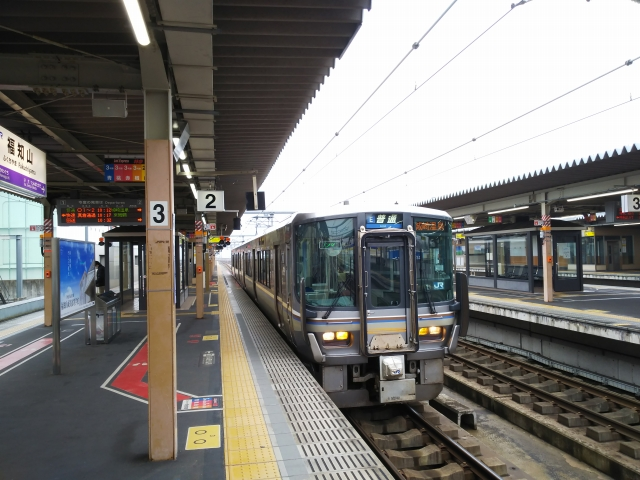
福知山に到着。どこ行っても同じような車両で面白くないの～
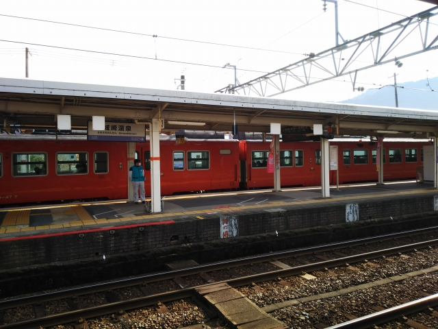
城崎からは、昔ながらのディーゼルカーや！
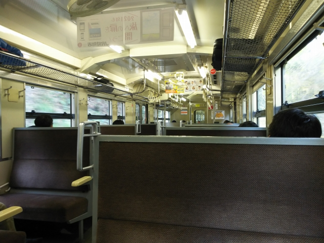
ええ具合にワンボックスに１人状態。
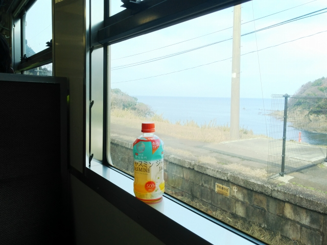
鎧駅。日本海がきれいに見えます。
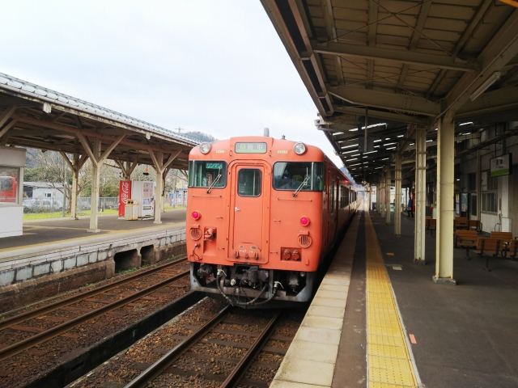
浜坂到着。この列車は珍しく鳥取行なのでそのまま乗ってて大丈夫。。
長めの停車なのでちょっと降りてみます。
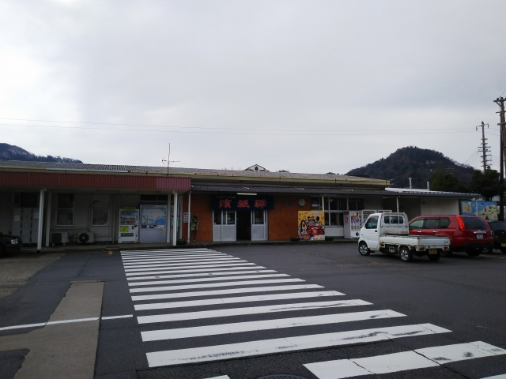
雪は全然ございません。
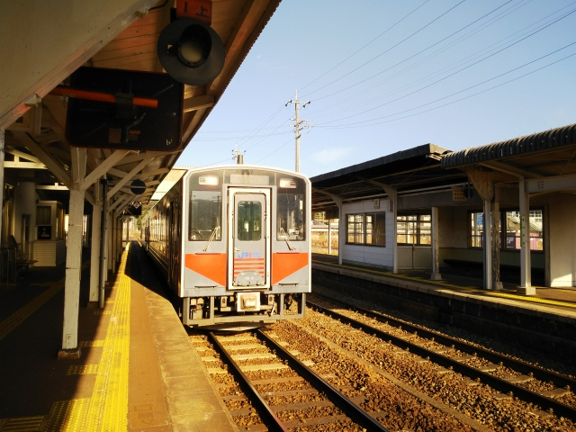
鳥取からは快速のとっとりライナー。けっこう停まるけどね。
やはり車両は新しい型。
今日の目的地の東郷温泉の最寄駅、松崎駅に到着。
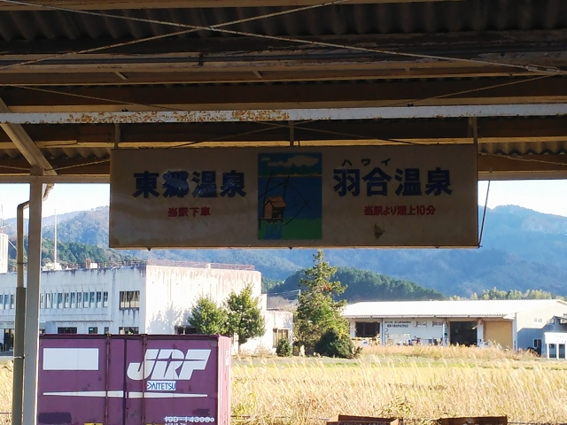
ちゃんと案内も出てる。
ここ松崎駅は、ハワイ温泉の最寄駅でもあります。
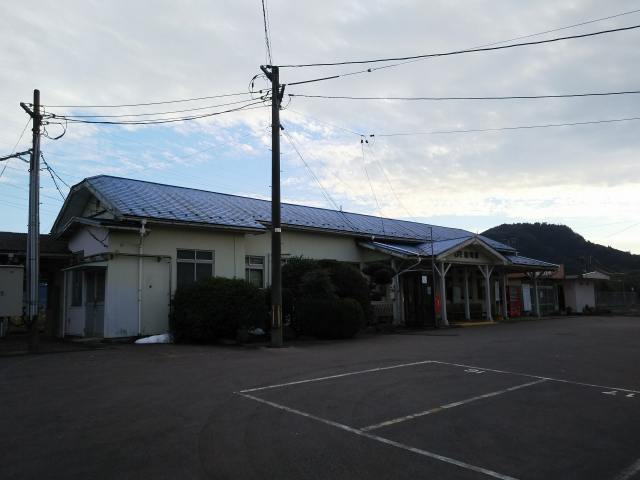
やっぱり雪は無し・・・
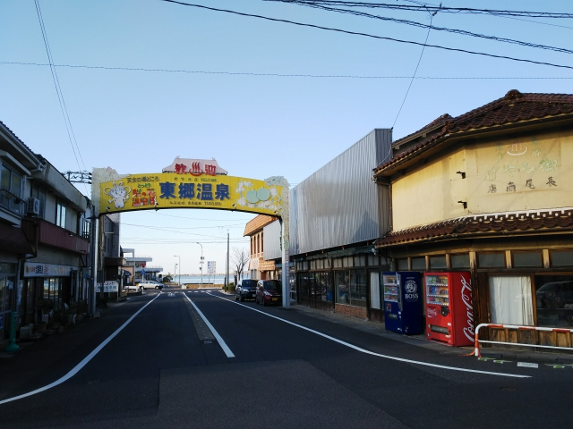
駅前に、ど～んと歓迎アーチがある！
実は東郷温泉、共同浴場は駅から歩いて５分ぐらいのところにある、超駅近温泉です。
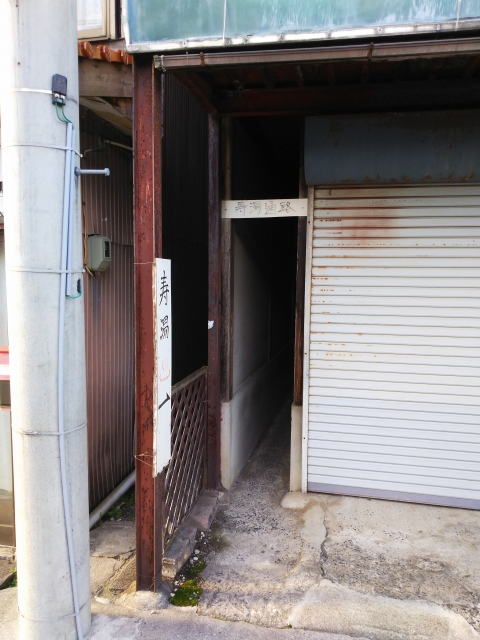
ここかな？
こんな狭いとこ通るの？
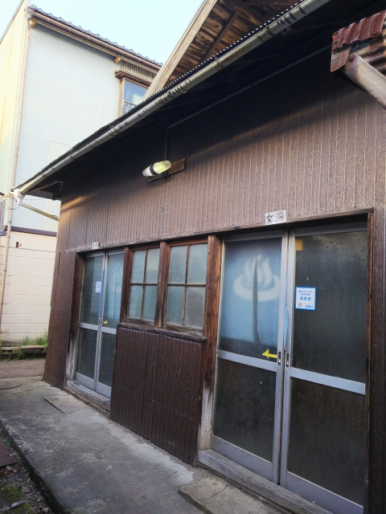
痩せてる私ですらギリギリの通路を抜けると、ありました。共同浴場の寿湯です。
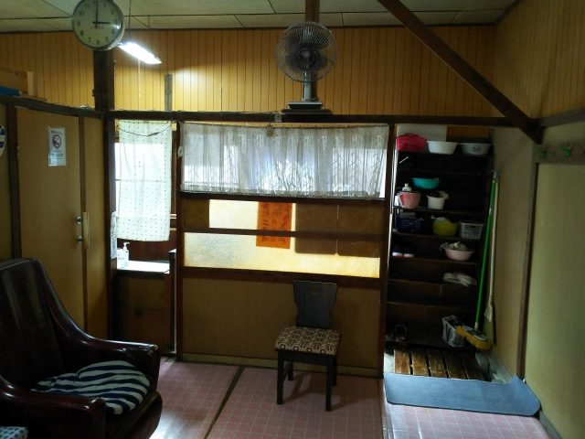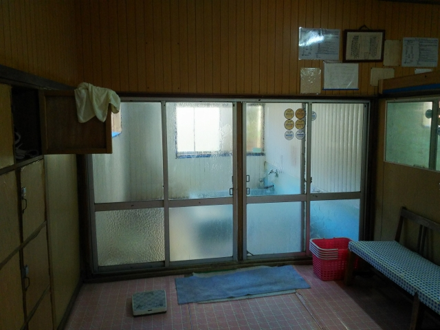
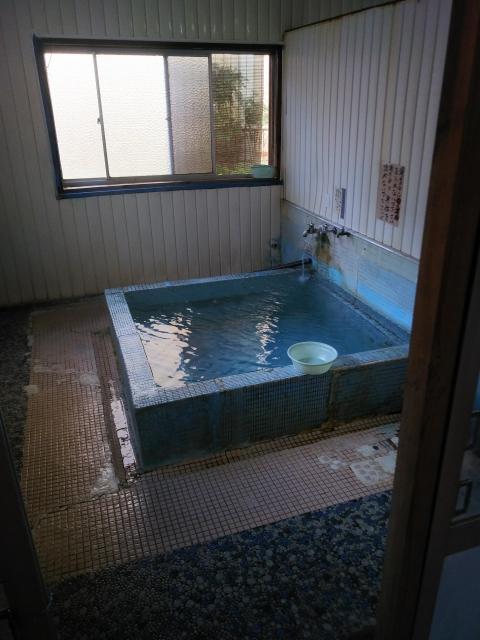
先客は一人だけ。その方もちょうどあがったところやったので、温泉を独り占め
できました。
かなり熱いという情報があったけど、草津なんかより全然まし。
じっくり浸かることができました。透明のええ湯でした。
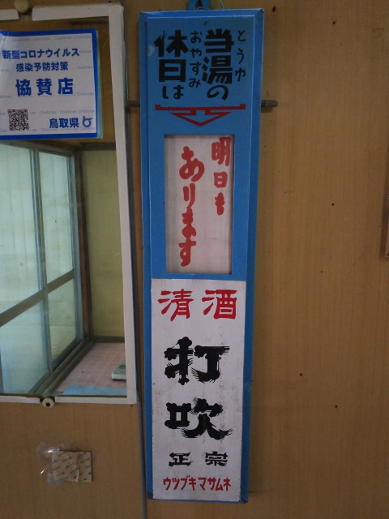
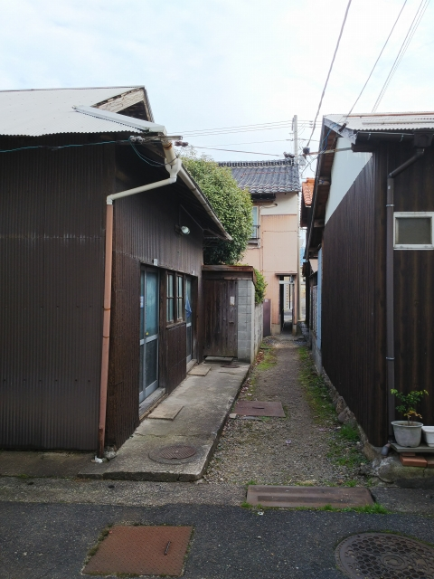
反対から見たところ。
太ってる人はどないして通るんやろ・・・
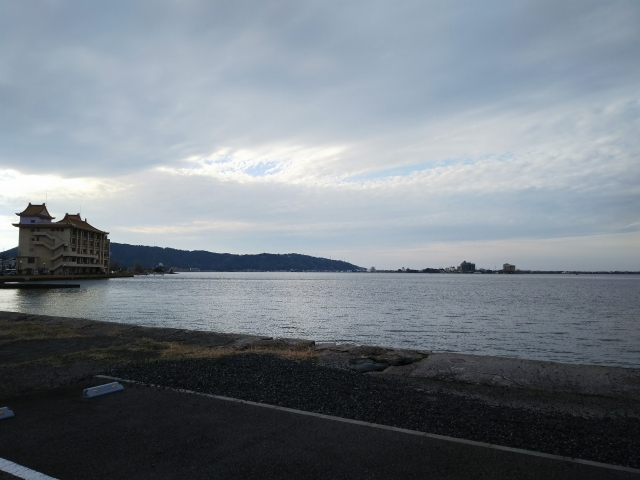
駅前には東郷湖があります。
向こう岸が羽合温泉。昔はここから連絡船が出てたそうです。
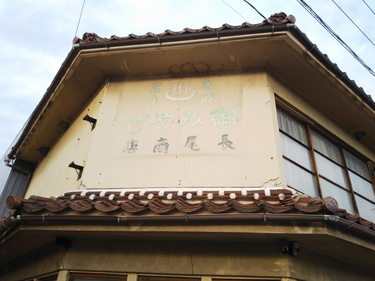
駅前の土産もの屋をよく見ると、浅津温泉の文字が。
昔、羽合温泉は「浅津温泉」と言ってたみたいです
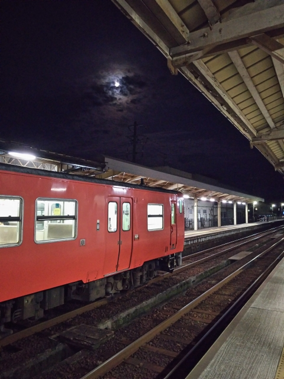
滞在した時間の何倍もの時間をかけてやってきて、何倍もの時間をかけて帰ります。
悲しいこづかい制のサラリーマン。当然、青春１８です。
帰りの浜坂の乗り継ぎ。
ＪＲ東日本では、キハ４０型も廃止になったとか。
国鉄型の車輛のボックスシートに座りながら日本海を眺める旅も、いつまで出来る
ことやら・・・
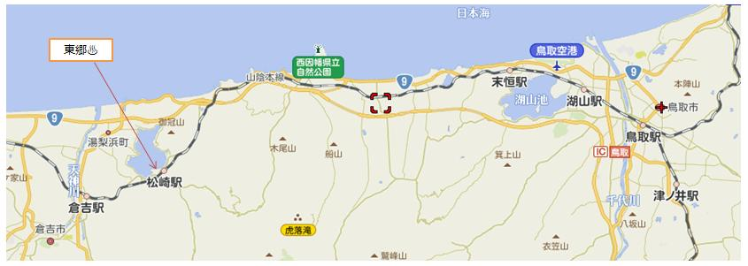